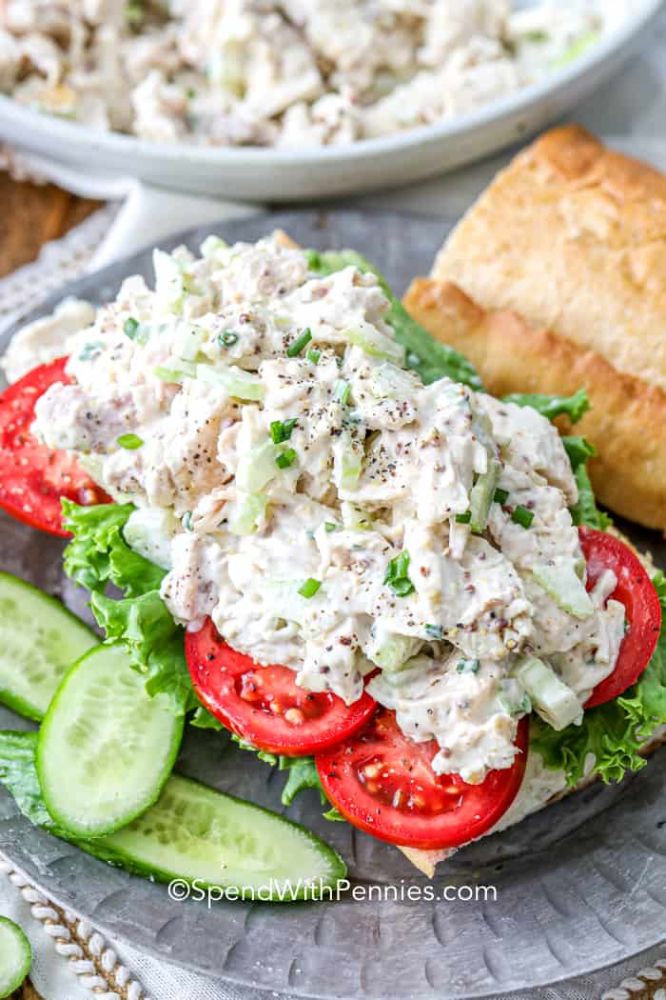

Chicken Salad!

Chicken Salad Recipe
Of all the summer salads, a classic chicken salad recipe is always a favorite at a picnic,
a barbecue, or an office potluck! Just a few ingredients can be transformed into a cold,
creamy salad or filling for a homemade chicken salad sandwich or wrap!
Ingredients
- Use leftovers from last night’s dinner or leftover rotisserie chicken or grilled chicken.
Ensure the chicken is cooled and shred or chop the chicken into bite sized pieces.
- As this is a classic chicken salad recipe, I’ve kept the additions to a minimum. Celery for crunch, green onions for flavor.
- This recipe can be made with a variety of nuts, veggies, and fruit for added flavor and texture.
- Chicken salad with grapes, avocado or dried cranberries is a favorite. Pecans or almonds pair well with this recipe.
- Mayonnaise is the base of this recipe and it’s simply seasoned.
Steps
- Chop cooked and cooled chicken and place into a large bowl with celery and onions.
- Mix dressing ingredients (per recipe below) in a bowl. Toss with chicken.
- Serve on rolls, bread or over a bead of lettuce.